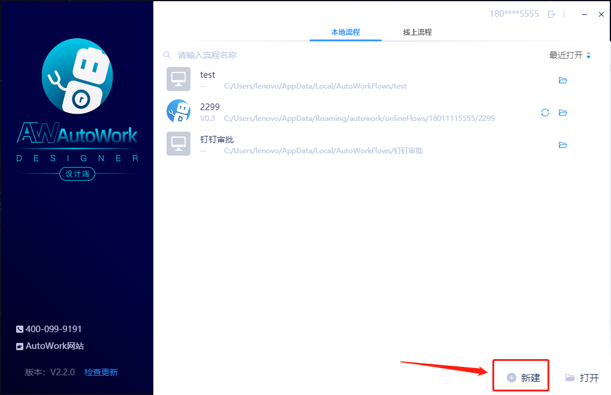
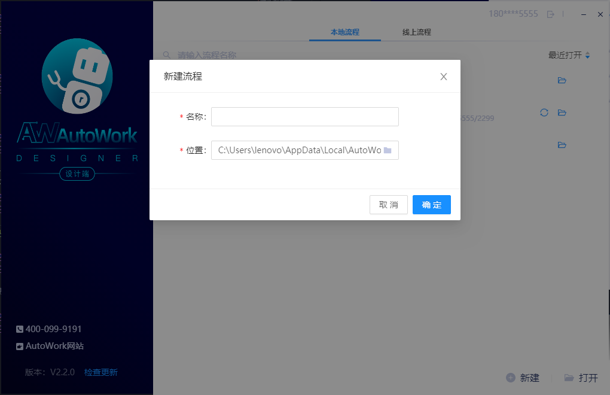
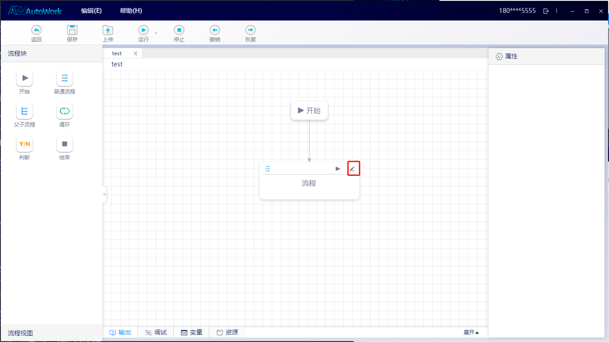
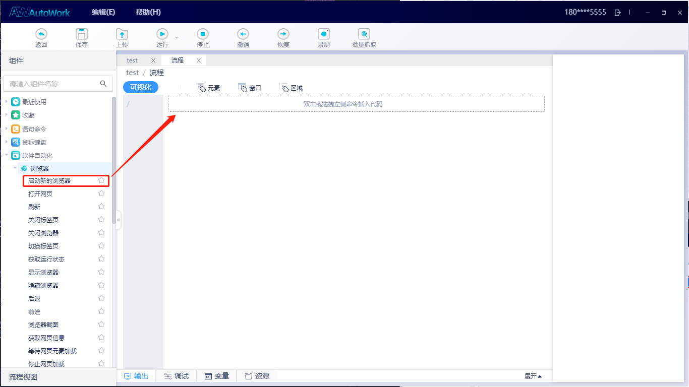
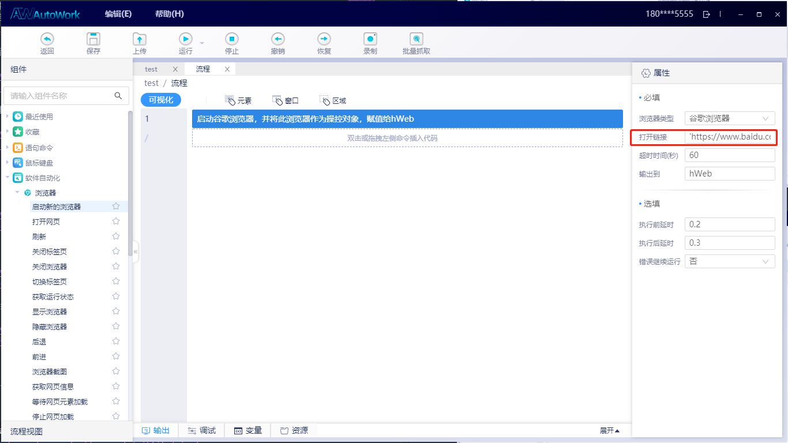
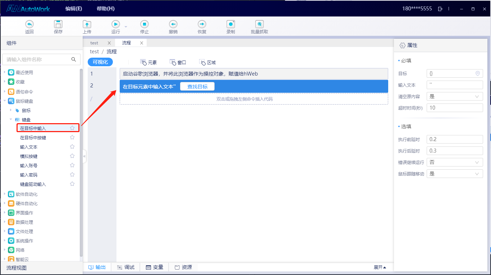
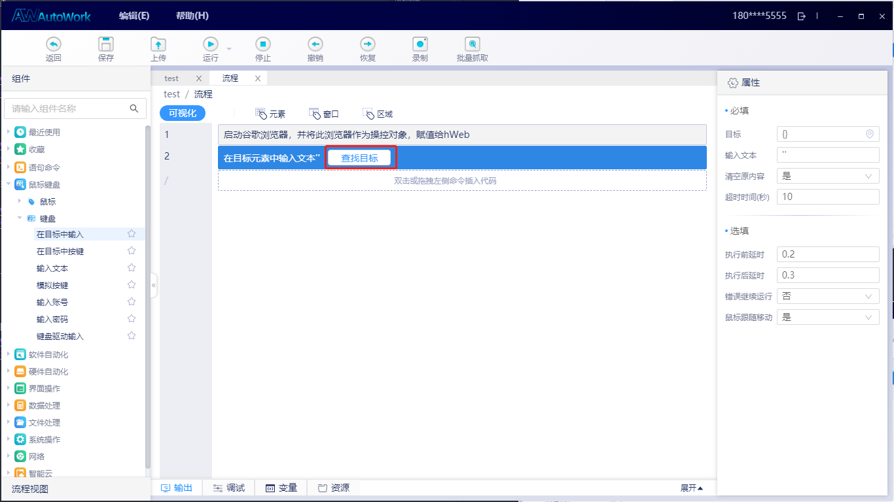
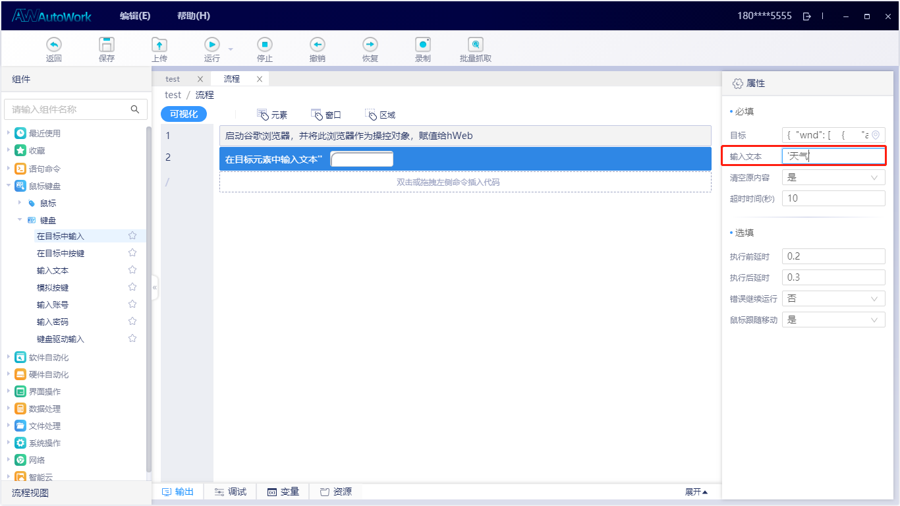

制作你的第一个机器人
以打开百度网站并搜索天气为例
点击新建
输入流程目录和名称
点击流程控件右侧的小铅笔进入流程设计界面
从组件库中，选择
软件自动化 -> 浏览器 -> 启动新的浏览器，拖拽到可视化窗口中， 或者直接双击组件，则会自动添加到当前选中流程的下一行 在打开链接属性框中输入
'https://www.baidu.com/'，字符串用单引号括起来
从组件库中，选择
鼠标键盘 -> 键盘 -> 在目标中输入，拖拽到可视化窗口中
手动打开谷歌浏览器，并进入百度网站
单击【在目标中输入】组件上的【查找目标】
将鼠标移入浏览器中的百度搜索框，此时有紫色透明遮罩会覆盖在该按钮上，点击鼠标
点击完鼠标后，目标编辑框中自动填入目标属性
从组件列表中，选择鼠标=》点击目标=》拖拽到可视化窗口中
单击【点击目标】组件上的【查找目标】
将鼠标移入浏览器中的百度搜索按钮，此时有紫色透明遮罩会覆盖在该按钮上，点击鼠标
点击保存，再点运行即可